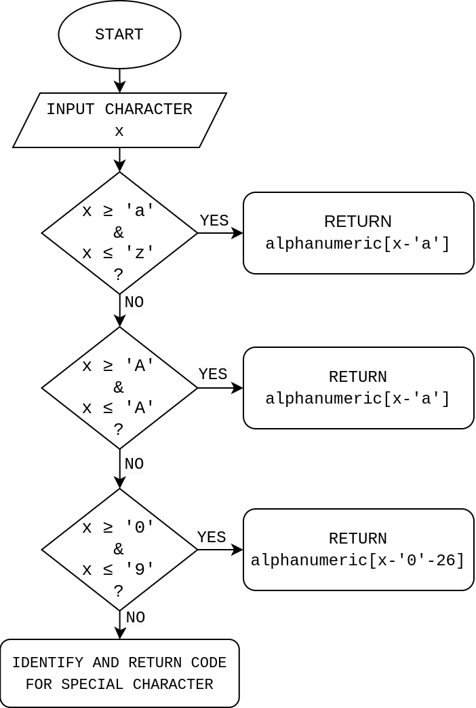

April 24, 2023
Modified:
The basic idea behind Morse code is to transmit pulses of continuous wave with varying lengths of transmissions representing dots and dashes (often called dits and dahs). It is with these dits and dahs that the characters of message are encoded.
Software that transmits Morse code should generate dits and dahs corresponding to each character of the message. This correspondence between characters and their Morse code needs to be encoded and stored somewhere in the software, which can easily be implemented in a variety of different ways. Since the number of characters having Morse code is so less and the computers are such a beefy things, this problem is a trivial task to be considered interesting.
In a project, however, I found myself trying to save every scrap of memory I could and had to encode Morse code with less memory usage for subsequent decoding and transmission in real-time. Here encoding refers to storing Morse codes in software in compile time. Decoding, on the other hand, refers to figuring out Morse code for given character of message from the encoded ones in real time for transmission.
Morse codes for alphabets, numbers, and special characters has been standardized by International Telecommunication Union (ITU) as International Morse Code.
| a .- | b -... | c -.-. | d -.. | e . |
| f ..-. | g --. | h .... | i .. | j .--- |
| k -.- | l .-.. | m -- | n -. | o --- |
| p .--. | q --.- | r .-. | s ... | t - |
| u ..- | v ...- | w .-- | x -..- | y -.-- |
| z --.. |
| 1 .---- | 2 ..--- | 3 ...-- | 4 ....- | 5 ..... |
| 6 -.... | 7 --... | 8 ---.. | 9 ----. | 0 ----- |
| , --..-- | . .-.-.- | ! -.-.-- | : ---... | ; -.-.-. |
| ( -.--. | ) -.--.- | " .-..-. | @ .--.-. | & .-... |
| ? ..--.. |
It should be noted that the there are more Morse codes than the ones listed above, and not all characters and unicode have their own Morse code.
Time duration of dit is considered to be the fundamental unit of time in Morse codes, which, in turn, depends on the speed (usually measured in words per minute) of Morse code transmission. Other time intervals are expressed in terms of the time duration of a dit as shown below:
In September 2022, I was working on firmware for a Romanian PocketCube, ROM-2, at ORION Space. Software in an 8-bit microcontroller, ATmega328p, had to handle satellite mission plans as well as a series of image packets from the camera payload during image transmission. So I had to be economical with memory usage of by software and, among others, decoding Morse was one of them.
The length of Morse codes vary from one (eg. e and t) to six (eg. numbers). The smallest data-type we have in C/C++ is a byte (8 bits) so the goal is to pack Morse code corresponding to each character in a byte with dits as '0's and dahs and '1's. I will describe two ideas to achieve the goal. I had the pleasure of pondering on and independently discovering these ideas. However, while preparing for this blog post, I did some search online and realized that others had used similar approaches.
The problem statement is pretty simple and straight forward. It is easy to code bits with 0s and 1s corresponding to dits and dahs but how do we know how far to parse? In other words, how do we distinguish, for example, a .- from j .---? Had there been three states in binary, we could use the third bit to be our stop bit. Obviously we don't have that luxury. This problem led to a search of possibility for utilizing unused bits to store the length of Morse code in binary.
If the length of Morse code is less than six, first five bits of a byte are used to store the Morse signals i.e. 0s for dits and 1s for dahs. The last three bits will be used to store the length of Morse code in Big Endian binary format. For example
| e | .- | 0____100 |
| a | .- | 01___010 |
| d | -.. | 100__110 |
| c | -.-. | 1010_001 |
| 1 | .---- | 01111101. |
It can be observed that maximum value of last three bits is 1012 or 510. This suggests that the second last and the last bits will never be ones. Therefore, _11 can be used to identify the Morse codes with length six. In doing so, we can take advantage of the first of the last three bits by storing the 6th Morse signal on it. Hence, first six bits of the byte represents Morse signals while the last to are ones pointing to the fact that the length of the Morse code is six. For example
| , | -.-.-. | 10101011 |
| . | .-.-.- | 01010111. |
Decoding Morse code from the encoded byte starts with detection of length of Morse code from the last three bytes*. Morse signals are then parsed from the first bit of the byte to the length of the code.
*If length is found to be seven then it means Morse code has length six (How? Why?).
I came across this idea in April 5, 2023 which rekindled my interest in this topic. This idea is much simpler than Mini-Morse and does not require us to encode the length of Morse code.
In this approach we start by encoding Morse signals from the first bit of the byte. After that, the remaining bits are filled with opposite of the last Morse signal. i.e. if the Morse code ends with dah (1), then remaining bits are filled by 0s. Here are some examples:
| e | .- | 01111111 |
| a | .- | 01000000 |
| d | -.. | 10011111 |
| c | -.-. | 10100000 |
| 1 | .---- | 01111100 |
To decode the Morse signals from the encoded byte, we start detecting bit change from the last bit. This detection will help identify the Morse length and parsing that many bits from the first bit of the byte gives us the required Morse code.
So far we discussed the ways of encoding the Morse code on a byte for each characters of message to be transmitted. However, how do we find the byte corresponding to the character of message that we want to decode Morse code for? For example, if the message to be transmitted is HELLO WORLD, the software should convert each characters (H, E, L ...) to Morse code by decoding it from the encoded bytes. How do the software know the encoded byte corresponding to, for example, H?
One way to achieve this is by storing the characters in an array and the encoded byte in another array with characters and their respective bytes sharing same indices on their respective arrays. A input character x is compared with each elements of character array and once x is identified, the index of x in the array is used to access the encoded Morse code for x. Only special characters are identified with this approach reason for which is discussed below.
We can however, use the fact that alphabets and numbers are stored as ASCII characters with serial integer values in C/C++ (i.e. A-Z: 65-90, a-z: 97-122, and 0-9: 48-57) to get rid of extra array to store the characters hence saving some memory.
Let us start with const char alphanumeric[36] that stores the encoded bytes for alphabets followed by that of numbers from 0 to 9. We can use following flow chart to identify the particular encoded byte corresponding to the character x. However the eleven special characters used in Morse code does not appear serially in ASCII chart, so we need an extra array containing special characters to identify index of x to access the corresponding encoded Morse code from its array.

Both of the approaches are equivalent when it comes to memory usage in encoding Morse codes (i.e. a byte per Morse code). However, there is a distinction in real-time decoding. Before writing the software, I assumed that Micro-Morse, since it is so simple, must be time efficient to decode too. However, a day later I realized that "the bit change detector", running in the loop, might actually take more time than parsing the Morse code length Mini-Morse. This delay caused by few (6 at worst case e.g. e and t) loops could be trivial for microcontrollers running in order of MHz clock cycles. Anyways, with run-time considerations, Mini-Morse is a clear winner.
The actual reason for detecting the bit change in Micro-Morse is to determine the length of the Morse code which is already present in the encoded byte of Mini-Morse. Therefore, it is safe to say that, fundamentally, both the techniques are identical after the length is parsed (for Mini-Morse) or counted (Micro-Morse).
A note on the nomenclature
Software that I wrote for ROM-2 was named Mini-Morse for the memory saving considerations that went into it. Later, I came across the second idea and I had to give it a name to distinguish from the first, right? Also I had this false instinct that it was better than the former. Hence the word Micro.
You can find software for both of them here.